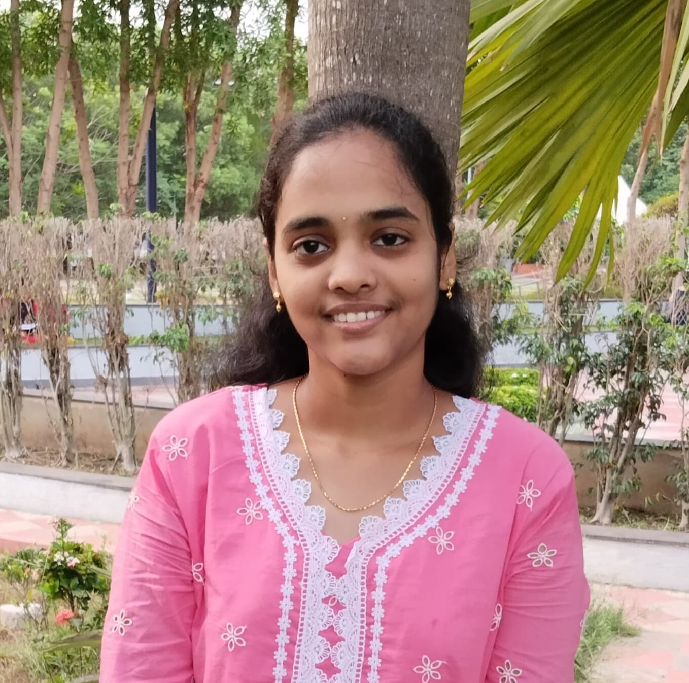

Hi, I'm Durga Vardhineedi
Final year undergraduate student specializing in Artificial Intelligence and Machine Learning.

Final year undergraduate student specializing in Artificial Intelligence and Machine Learning.
I am a final-year undergraduate student in Artificial Intelligence and Machine Learning at Shri Vishnu Engineering College for Women. I have a good foundation in Data Structures and Algorithms and consistently enhance my problem-solving skills. Alongside my academic interests, I am passionate about building full-stack web applications and enjoy exploring new technologies. I’m eager to take on challenging projects that allow me to apply my knowledge and continue growing as a developer.
If you'd like to get in touch regarding opportunities, or any queries, feel free to reach out through the following contact details.
Email: durgavardhineedi33@gmail.com
Mobile: +91 9059332825
Location: Andhra Pradesh, India